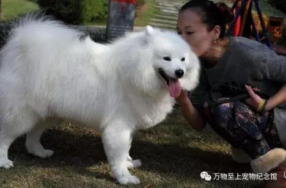
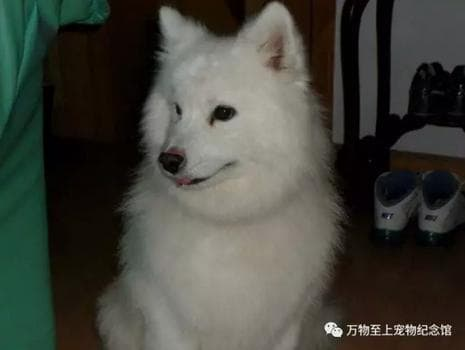
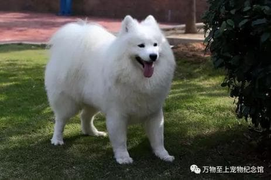
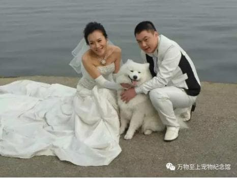
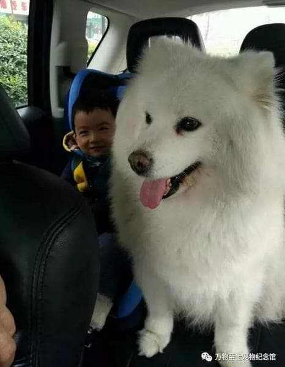
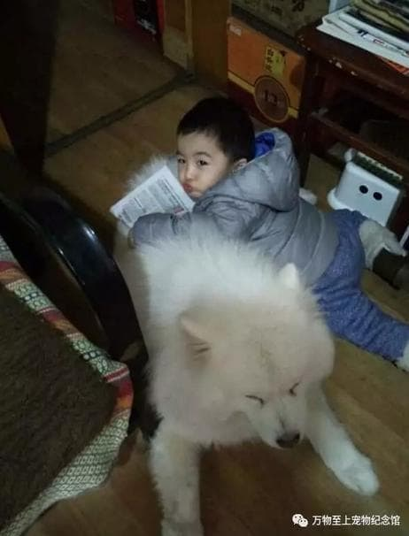
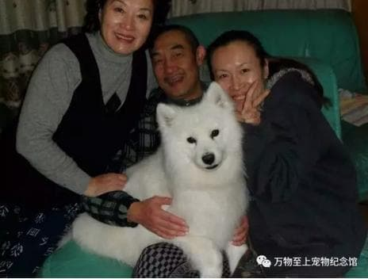
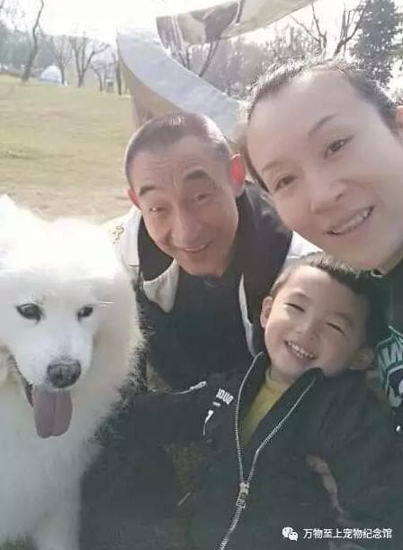
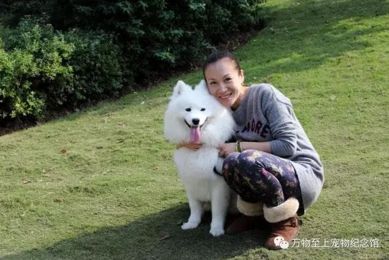

2017年7月30日，这依旧是普通的一天。
太阳照常升起，我照常吃下了没那么好吃的食物。
可能，是最近牙不太利索了。
你一直在磨磨蹭蹭，不愿出门。
七年了，我太了解你，我知道是为什么；你在想什么；一会儿在路上你会对我说什么。
我当然不会怪你，如果可以，我只想抱抱你。

终于，到了医院。
我又闻到了最讨厌的消毒水的味道。这是我最不喜欢的地方，每次来都要打针。
可是，念在这些穿白衣服的怪人总能让我少受一点儿罪，今天也就原谅他们吧！
你教过我的，不能乱吃东西，会吃坏肚子；要有礼貌，不能乱吼乱叫和啃人。我都记得。
那么，就让大家摸摸我吧，当做是最后的告别。
虽然，我只喜欢让你一个人摸头。
……
恍惚间，我好像做梦了…
梦见我第一次遇到你和爸爸；梦见姥姥，姥爷；梦见散不去的厨房的香味和我偷吃过最好吃的腊肉…
那一天真是太丢脸了呀，我那么脏，还走迷了路。当然我还担心姥姥，姥爷会不喜欢我。不过当我看到他们的那一瞬间，我就确信，我终于要有一个家了。

那一天我有了自己的名字，叫杨小宝。有了生日，是2011年1月3日（其实我也不知道我出生在哪天，只知道这是我和粑粑麻麻相遇的日子，那年我可能两岁）。
一开始我当然不能释放自己的天性，虽然我很想进卧室和你们一块儿睡；闻到厨房的香味很想闯进去。可是我不能，万一我又被丢掉怎么办，这就是我每天担心的事，但很快我就习惯了这样的生活。
只是有一次，我闻到了任何狗都不能抗拒的香味。天哪，这大概就是世界上最好闻的气味了吧！
我想，尝尝。
……
果然，我被爸爸揍了。
但是我一点儿也不后悔，因为我尝过世界上最好吃的东西，它就是一直住在我心里的那块腊肉。

渐渐，我越来越壮，就连我照镜子都会被自己迷倒。每天精力充沛得不行不行的，而姥爷也愿意每天清晨六点就陪我出去玩。当然，天天这样玩我会觉得有点儿腻，于是我就躲起来（其是就是笨呗，又走丢了）让全家人找我。虽然我的行为你们觉得很幼稚，但作为一只狗的职责就是引起我爱的人的注意啊。
可是其后果就是… 我又被揍了。
时间过的太快，粑粑麻麻结婚了，我还陪他们拍了婚纱照。
快看，我如此英俊。

不久后我还有了一个弟弟，更有缘的是我们的生日都是1月3日。

噢，对了，其实在麻麻怀孕的时候，我也有过要离家出走的念头，听穿白衣服的怪人说“怀孕不适合跟宠物待在一起。”后来是因为麻麻根本离不开我。我才决定留下来照顾弟弟。虽然有时候弟弟会欺负我，但我知道我这个做大哥的一定要让着他。

……
就这样我们在一起快乐地生活了七年。


……
慢慢的我感觉到我身体越来越沉重，就连我最喜欢打滚的草坪也不想去。
牙齿也坏掉了，啃不了喜欢骨头…每天只想懒懒地趴在房间里，等着粑粑麻麻下班。
......
这个梦好长好长...
长得，就好像一辈子...
我能感觉到麻麻站在门外看着我。
我想，也许是我的使命快要完成了。
但，这并不意味着我会离开，我会以另外一个身份重新回到你的身边一直守护着你。

本文配图由杨小宝的主人提供